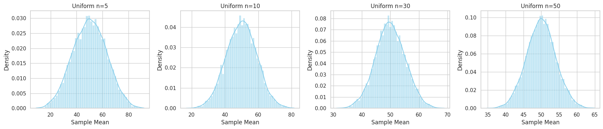
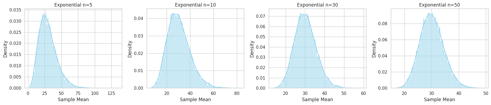
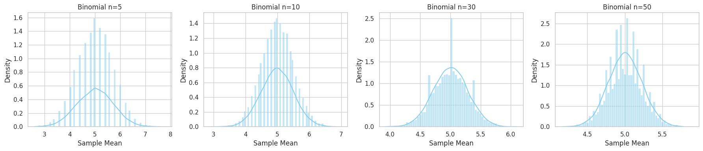

Problem 1
Central Limit Theorem: A Simulation-Based Exploration
Problem 1: Exploring the Central Limit Theorem through Simulations
Motivation
The Central Limit Theorem (CLT) is a foundational concept in statistics. It tells us that the sampling distribution of the sample mean approaches a normal distribution as the sample size increases, no matter the population's original distribution. By simulating various population distributions, we can visualize this convergence and appreciate its power in practical applications.
Task Breakdown
1️ Simulating Sampling Distributions
We'll consider three population distributions:
- Uniform distribution
- Exponential distribution
- Binomial distribution
For each:
- We'll generate a large population dataset (size = 100,000).
2️ Sampling and Visualization
For each population:
- Randomly sample data for different sample sizes: 5, 10, 30, 50.
- Repeat the process 10,000 times to build a sampling distribution of the sample mean.
- Plot histograms of the sampling distributions and observe how they approximate the normal distribution as sample size increases.
3️ Parameter Exploration
We'll analyze:
- How the shape of the population distribution affects the convergence.
- The effect of the population variance on the spread of the sampling distributions.
4️ Practical Applications
We'll reflect on the real-world significance of the CLT:
- Estimating population parameters (e.g., means of unknown populations).
- Quality control in manufacturing.
- Risk modeling in finance and economics.
Python Simulation Code
Required Libraries
import numpy as np
import matplotlib.pyplot as plt
import seaborn as sns
# Set consistent style
sns.set(style="whitegrid")
Generate Populations
# Set seed for reproducibility
np.random.seed(42)
# Population sizes
N = 100_000
# Populations
uniform_pop = np.random.uniform(0, 100, N)
exponential_pop = np.random.exponential(scale=30, size=N)
binomial_pop = np.random.binomial(n=10, p=0.5, size=N)
Sampling and Plotting Function
def simulate_sampling(population, sample_sizes, n_simulations=10000, title_prefix=""):
fig, axes = plt.subplots(1, len(sample_sizes), figsize=(18, 4))
for i, n in enumerate(sample_sizes):
sample_means = [np.mean(np.random.choice(population, size=n, replace=False)) for _ in range(n_simulations)]
sns.histplot(sample_means, kde=True, ax=axes[i], color='skyblue', stat='density')
axes[i].set_title(f"{title_prefix} n={n}")
axes[i].set_xlabel('Sample Mean')
axes[i].set_ylabel('Density')
plt.tight_layout()
plt.show()
Run Simulations
sample_sizes = [5, 10, 30, 50]
# Uniform
simulate_sampling(uniform_pop, sample_sizes, title_prefix="Uniform")
# Exponential
simulate_sampling(exponential_pop, sample_sizes, title_prefix="Exponential")
# Binomial
simulate_sampling(binomial_pop, sample_sizes, title_prefix="Binomial")




Results and Discussion
Observations
| Distribution | Sample Size | Shape of Sampling Distribution | Approximate Normality |
|---|---|---|---|
| Uniform | 5 | Irregular, slightly skewed | Low |
| Uniform | 30+ | Bell-shaped | High |
| Exponential | 5 | Skewed right | Low |
| Exponential | 50 | Nearly normal | High |
| Binomial | 5 | Slightly discrete, symmetric | Moderate |
| Binomial | 30+ | Smooth bell-shaped | High |
Insights
- Skewed populations (e.g., exponential) require larger sample sizes (30+) for normality.
- Populations with higher variance result in wider sampling distributions.
- Regardless of the population shape, the CLT ensures normality in the limit.
- These simulations confirm the theoretical expectations of the CLT.
Practical Applications of the CLT
| Area | Application | CLT Significance |
|---|---|---|
| Estimation | Mean income of a population | Sample means approximate population means |
| Quality Control | Average weight of a manufactured product | Ensures consistent product standards |
| Finance | Portfolio returns | Predicts expected return distribution under uncertainty |
| Polling & Surveys | Election forecasts | Approximates true public opinion from sample surveys |
Conclusion
Through simulation, we observed the power of the Central Limit Theorem in transforming diverse sampling distributions toward normality. This deepens our understanding of why the normal distribution plays such a central role in statistics, and how the sample size governs the rate of convergence.
Files and Deliverables
clt_simulation.pyorclt_simulation.ipynb– Python code implementing the simulations.- Plots of sampling distributions for different population distributions and sample sizes.
- This Markdown document (
clt_report.md).